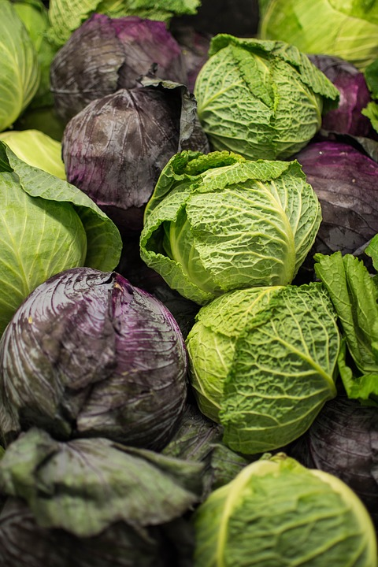
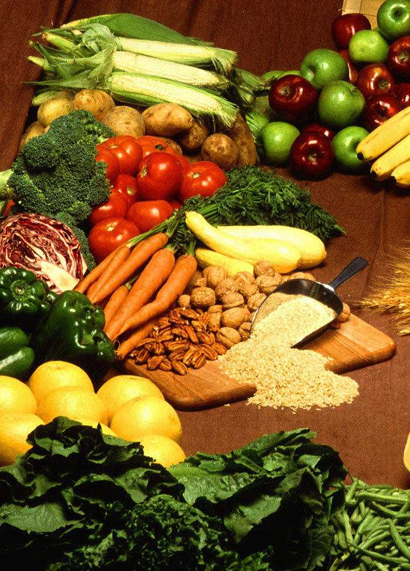

Smørrebrød
Vegetable Kabobs.
Stuffed Cabbage.
Mushroom Carpaccio.
Rubik's cube salad.
Stuffed Apples.
Balsamic Avocado Toast.
Avocado Pesto Zucchini Noodles.
So, what is New Nordic Diet?
The New Nordic Diet was created at the beginning of the century by Claus Meyer. He did not like the fact that humanity is destroying itself and 1 billions of people suffering from Hunger in one country another billion of people suffering from obesity. He wants to change that. He decided to open the restaurant called “Noma” where he would use local ingredients to create new kind of cuisine suitable for everybody and at the same time improve the health of the Nations. Of course, there was a lot of resistance to that and people made fun of him by saying, where he could get local ingredients in Copenhagen in the winter.
But he was determined to do that. He got together people from all Nordic countries, representatives of the government, the scientists and the chefs to help him and they put together and Manifesto in where they promised to create a new kind of cuisine which is affordable, based on the local ingredients and very healthy for everybody.
Today, years later Noma has been one of the most successful restaurants in the world. The ingredients of that restaurant are very simple, very vocal and very healthy. Chefs at the Norma restaurant working together with Scandinavian best nutritionists, scientist and the top chefs of those who create new culinary ideas and create everyday life meals for members of young food companies and ordinary people.New Nordic culinary art isn't barely an explore for what is named objective culinary experience.
Highlight
Also to compare to traditional food or contemporary French-based food which is heavy on butter and cream duck fat and oil, new Nordic diet is trying to limit fat in its menus.
New Nordic Diet chefs started to work with Copenhagen University progect called Opus, to create a new kind of menu for the kids and catered it to schools to prevent kids from obesity and diabetes. The New Nordic Diet menu created recommendations, which was different from the Nordic nutritional recommendation of 2005.

That was not at the declaration of war against Moroccan tagine, Mexican Ceviche or food from China, Etc that was about a goal that we end up having the world composed of a lot of distinct cultures and we should live together in the Harmony and create and best and healthy menus for our people.
Noma was created on the idea that hundred percent of the product should come from the local farmers and therefore use those restrictions new menus were created. By not using the transport to bring the food to Noma from far away and not using GMO, they could bring the freshest produce to the restaurant and create the new kind of cuisine.
Whether it's cabbage or mushrooms and are different herbs or flowers they could find in the forest everything was used for the new kind of food they create. It is very hard to talk about Nordic diet as the Nordic Cuisine taste is very hard to explain. When we talk about Italy and Mediterranean food we talked about olive oil lemon and herbs like Rosemary and Thyme. when we talked about Japan would think about fish, squid, rice, and Ginger. Thai Kitchen I think sweet and sour and spicy and Indian Kitchen is Curry. The Nordic cuisine is just scratchy, salty and fatty and new Nordic diet is trying to change that.

Vegetables are playing important role in creating a flavor of North diet. Another way to create flavor and Northern taste Is acidity, in this case, we are talking about vinegar and lemon. They created a whole array of new kinds of vinegar that come to help, starting from kinds of vinegar from Apple, Blackcurrant Rose hips and so on. And vinegar will make any dish taste differently and pleasant starting from cabbage or maybe even Apple.
Then you would think that they are trying to create a dishes which are easy to make, easy to afford and easy to love. When the new Nordic diet started the work, Opus had the idea to investigate the health benefit of so-called new Nordic tired and was responsible for communication over the efforts and results. Opus invested a lot of money and resources in communicating about the research of the New Nordic Diet and about New Nordic Diet potential to making people healthier.
The New Nordic Diet created several principles and guidelines. The first guideline says that more calories should come from plants and the fewer calories should come from meat or fish. The consumption of meat for the past 50 years rose many times in Nordic countries and is and was one of the highest in the world. Meat is a list of environmentally friendly product to consume and therefore naw it should be minimized. There are more friendly protein sources which are greater for health benefits, therefore to be preferred. Vegetables, fruits, grains, potatoes, and herbs should be included in the daily life. Those products are environmentally friendly and more sustainable.
Northern countries surrounded by water and have a large quantity of fish and shellfish.
Nordic fish has been greatly exported, so now that has a great potential for increasing local consumption. The fruits and vegetables should be taken every day as the largest part of the diet. Specific fruits and vegetables for the northern regions such as various cabbages, root vegetables, and legumes there were selected Because of their potential health-promoting properties. Fresh herbs are a rich in vitamins and minerals and additional Nordic herbs such as dill, parsley is sources of aromatic additions to the menu. Potatoes are also part of the New Nordic Diet. Consumption of potatoes has fallen steadily, since the introduction of rice and pasta to the Nordic countries, but potatoes are an important source of dietary fiber, vitamins and minerals Therefore the Nordic diet is recommended it as an important part of the daily food.
Nordic population eats practically no plants and mushrooms from the wild country, but it has abandonedly present in the local forest and therefore New Nordic diet recommends intake of around 5 grams of mushrooms a day and also some wild plants.
Potatoes are an important source of dietary fiber.
Average intake of nuts in Danish population is very low so then New Nordic diet recommends increase the consumption of the nuts to reduce the risk of cardiovascular disease and weight gain. Also, nuts have a different flavor and can be used to improve the taste of the menu and intake off 30 grams of nuts per day is recommended. Although consumption of fish and shellfish is recommended since it's been significantly health benefit promotion potential. Also, the intake of seaweed has a high potential of providing minerals proteins and vitality fibers to the menu.